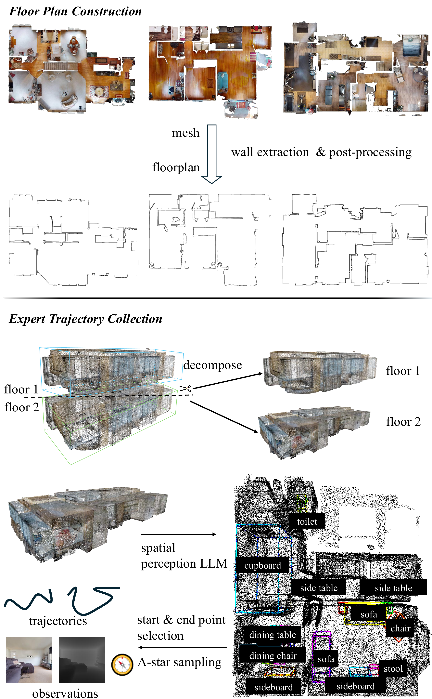
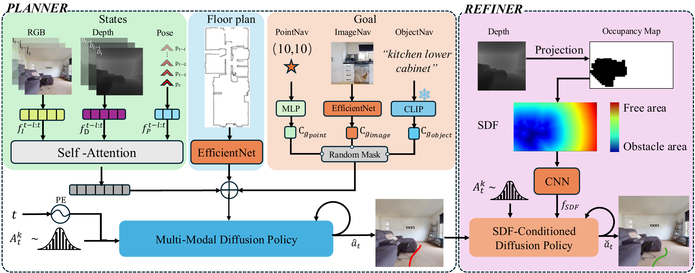

School of Computer Science & Technology, Beijing Institute of Technology
Abstract
Floor plans encapsulate compact spatial priors, enabling agents to navigate unseen scenes more efficiently. While prior work has explored floor plan–guided navigation, it has focused mainly on PointNav and a limited set of environments. To bridge this gap, we introduce FloVerse, a new task for floor plan–guided embodied navigation that unifies PointNav, ObjectNav, and ImageNav. To support this FloVerse, we assemble FloVerse-1.6K, a large-scale dataset of 1.6K scenes from HM3D and Gibson 4+, paired with corresponding floor plans, comprising 240K expert trajectories and 12M RGBD frames. We further propose ThreeDiff, a two-stage imitation learning policy comprising a planner, a diffusion-based multimodal goal-reasoning module trained via masked-modality modeling, and a refiner, a depth-based trajectory-refinement module for safe execution. Extensive experiments demonstrate that (1) floor-plan priors improve navigation performance across all goal modalities, and (2) ThreeDiff implicitly captures spatial information from floor plans. These results underscore the effectiveness of spatial priors and validate our proposed unified approach for floor plan–guided embodied navigation.

FloVerse data collection and construction pipeline.
We extract stable structural elements, such as walls, from object-containing meshes, as these elements correspond to features represented in floor plans. Vertices are first filtered based on their height and normal orientation, with a threshold of 1.25 m, effectively removing most objects. To further mitigate reconstruction artifacts and spurious noise, we apply morphological operations, including dilation and erosion, for denoising.
We build upon HM3D-OVON (379 categories, 181 scenes), cleaning viewpoints outside navigable regions to yield 304 categories across 169 scenes. To enrich diversity, we employ SpatialLM for additional object recognition with manual quality filtering, applied layer-wise to each scene point cloud. In total, FloVerse spans 325 object categories across 299 scenes.
We construct expert trajectories covering all three goal modalities. For PointNav, goals are randomly sampled positions on the navigable map. For ObjectNav and ImageNav, goals correspond to annotated object locations. Start positions are randomly chosen from navigable areas at least 5 m from the goal. The shortest path between each start–goal pair is computed via A* and discretized into waypoints at 10 cm intervals, recording RGBD observations and agent pose at each step. In total, FloVerse contains ~240K trajectories with ~12M RGBD–pose pairs, including ~74K ObjectNav/ImageNav episodes.
| Dataset | Train | Eval | ||
|---|---|---|---|---|
| HM3D | Gibson 4+ | HM3D | Gibson 4+ | |
| Scenes | 1,321 | 121 | 167 | 18 |
| Total episodes | 198,150 | 18,150 | 25,050 | 2,700 |
| IO episodes | 65,700 | — | 8,550 | — |

Overview of FloVerse. FloVerse is a two-stage trajectory generation framework for floor plan–guided navigation. In the first stage, goal-related features, floor plan representations, and observation embeddings are concatenated and used as the conditioning input to a diffusion model, which generates a coarse initial trajectory. In the second stage, depth-derived obstacle-awareness features are integrated with the initial trajectory and fed into a second diffusion model, which refines the trajectory to yield a final, obstacle-aware navigation path.
Experiments
| Method | PointNav | ImageNav | ObjectNav | |||
|---|---|---|---|---|---|---|
| SR | SPL | SR | SPL | SR | SPL | |
| FloVerse w/o F | 25.8 | 25.6 | 22.6 | 18.4 | 20.9 | 16.5 |
| FloVerse | 42.0 | 36.6 | 28.9 | 22.4 | 28.6 | 22.3 |
| SR: Success Rate · SPL: Success weighted by Path Length | ||||||
| Method | Gibson 4+ | HM3D | ||
|---|---|---|---|---|
| SR | SPL | SR | SPL | |
| DD-PPO | 18.3 | 10.5 | 13.7 | 7.0 |
| FloDiff (pretrain) | 40.0 | 28.8 | 23.7 | 17.8 |
| FloDiff (finetune) | 38.8 | 29.6 | 27.7 | 21.1 |
| FloVerse | 54.4 | 50.0 | 38.1 | 32.5 |
| Method | ImageNav | ObjectNav | ||
|---|---|---|---|---|
| SR | SPL | SR | SPL | |
| ZSON | — | — | 7.2 | 1.1 |
| NoMad (pretrain) | 15.4 | 10.9 | — | — |
| NoMad (finetune) | 22.8 | 17.0 | — | — |
| FloVerse | 28.9 | 22.4 | 28.6 | 22.3 |
Reference
If you use FloVerse in your research, please cite our paper.